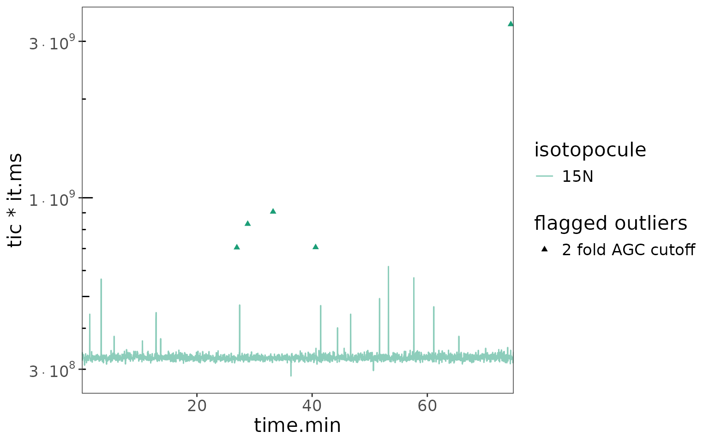
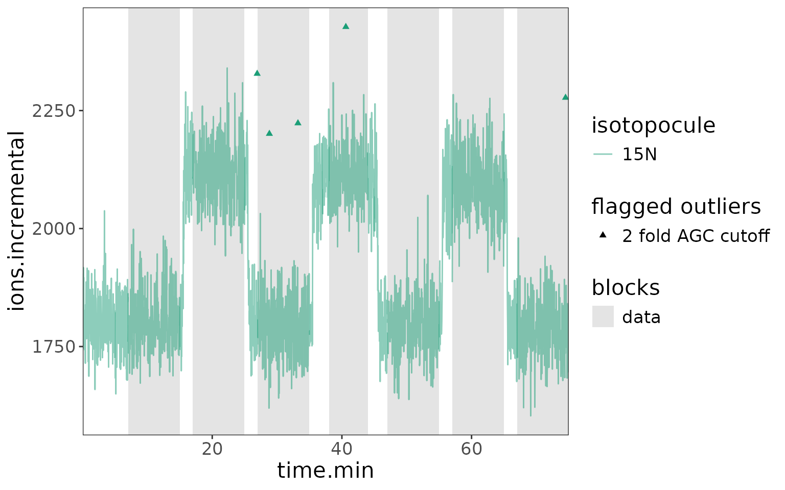
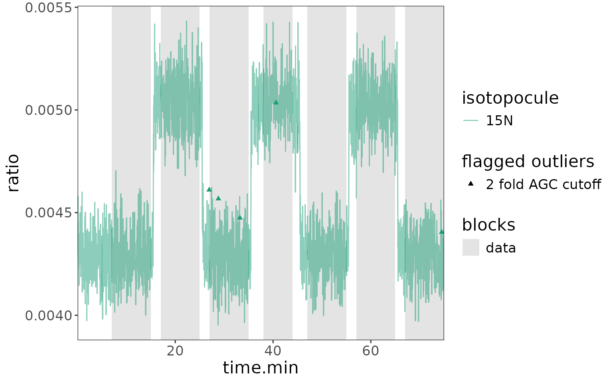
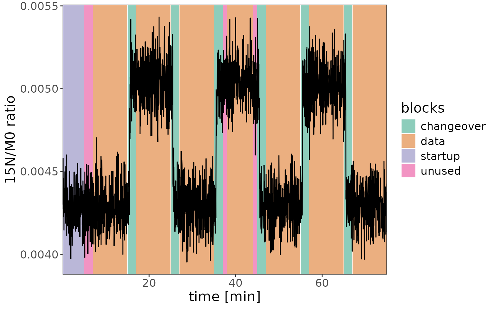
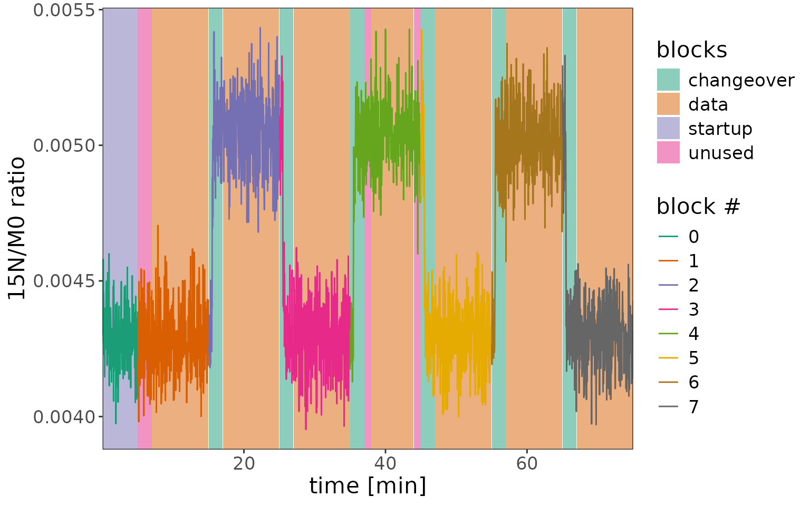
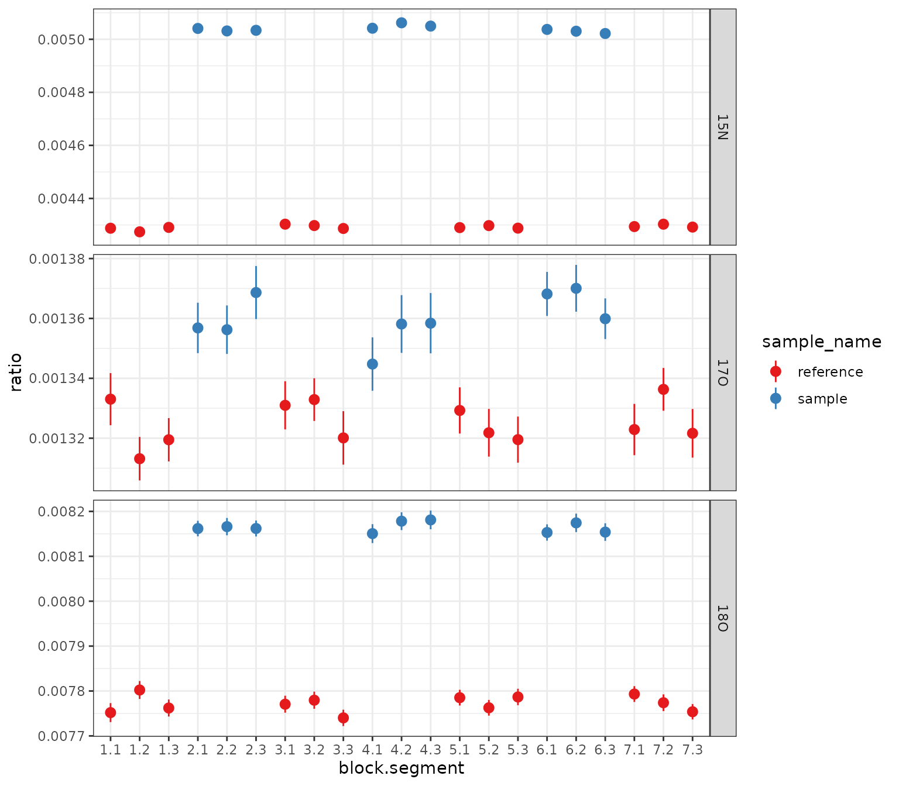
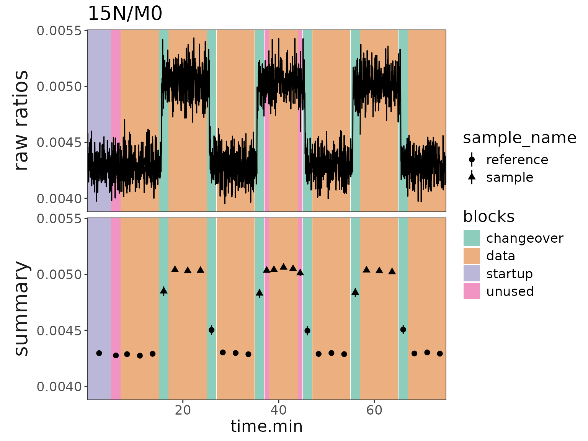
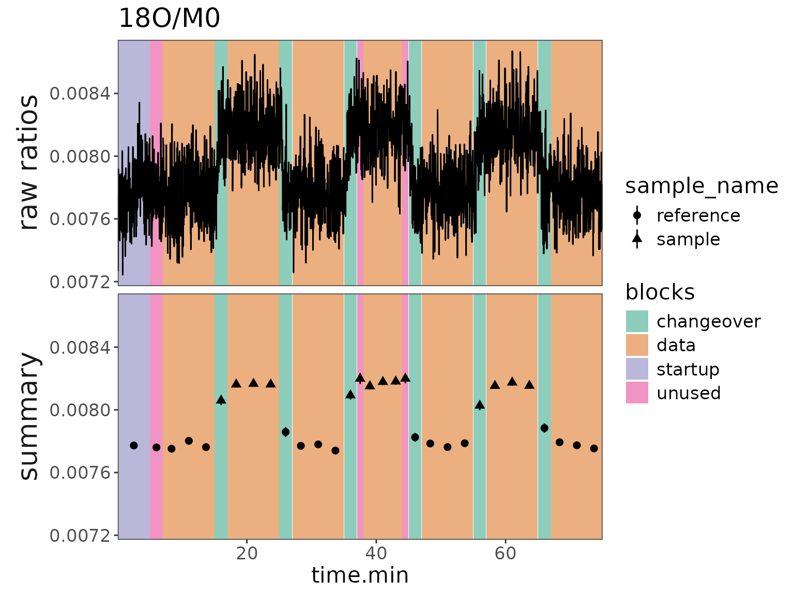

# libraries
library(isoorbi) #load isoorbi R package
library(forcats) #better ordering of factor variables in plots
library(dplyr) # for mutating data frames
library(ggplot2) # for data visualizationA basic data processing example
# Read .isox test data
df <-
system.file("extdata", "testfile_dual_inlet_new.isox", package = "isoorbi") |>
orbi_read_isox() |> # reads .isox test data
orbi_simplify_isox() |> # optionally: keeps only most important columns; equivalent to simplify check box in IsoX
# check for issues
orbi_flag_satellite_peaks() |> # removes minor signals that were reported by IsoX in the same tolerance window where the peak of interest is
orbi_flag_weak_isotopocules(min_percent = 10) |> # removes signals of isotopocules that were not detected at least in min_percent scans
orbi_flag_outliers(agc_fold_cutoff = 2) |> # removes outlying scans that have more than 2 times or less than 1/2 times the average number of ions in the Orbitrap analyzer; another method: agc_window (see function documentation for more details)
orbi_define_basepeak(basepeak_def = "M0") # sets one isotopocule in the dataset as the base peak (denominator) for ratio calculationNo satellite peaks, no weak isotopocules, a few AGC fold outliers:
df |> orbi_plot_raw_data(isotopocule = "15N", y = tic * it.ms, y_scale = "log")
Define dual inlet blocks
# define blocks
df_w_blocks <-
df |>
# general definition
orbi_define_blocks_for_dual_inlet(
ref_block_time.min = 10, # the reference block is 10 min long
sample_block_time.min = 10, # the sample block is 10 min long
startup_time.min = 5, # there is 5 min of data before the reference block starts, to stabilize spray conditions
change_over_time.min = 2, # it takes 2 min to make sure the right solution is measured after switching the valve
sample_block_name = "sample",
ref_block_name = "reference"
) |>
# fine adjustments
orbi_adjust_block(block = 1, shift_start_time.min = 2) |> # the 1st reference block is shorter by 2 min, cut from the start
orbi_adjust_block(block = 4, set_start_time.min = 38, set_end_time.min = 44) # the start and end of the 2nd reference block are manually set
# get blocks info
blocks_info <- df_w_blocks |> orbi_get_blocks_info()
blocks_info |> knitr::kable()| filename | data_group | block | sample_name | data_type | segment | start_scan.no | end_scan.no | start_time.min | end_time.min |
|---|---|---|---|---|---|---|---|---|---|
| 20230518_05_USGS32_vs_USGS34 | 1 | 0 | reference | startup | NA | 5 | 820 | 0.031 | 4.985 |
| 20230518_05_USGS32_vs_USGS34 | 2 | 1 | reference | unused | NA | 825 | 1150 | 5.015 | 6.990 |
| 20230518_05_USGS32_vs_USGS34 | 3 | 1 | reference | data | NA | 1155 | 2465 | 7.021 | 14.982 |
| 20230518_05_USGS32_vs_USGS34 | 4 | 2 | sample | changeover | NA | 2470 | 2795 | 15.016 | 16.990 |
| 20230518_05_USGS32_vs_USGS34 | 5 | 2 | sample | data | NA | 2800 | 4110 | 17.021 | 24.982 |
| 20230518_05_USGS32_vs_USGS34 | 6 | 3 | reference | changeover | NA | 4115 | 4440 | 25.016 | 26.991 |
| 20230518_05_USGS32_vs_USGS34 | 7 | 3 | reference | data | NA | 4445 | 5755 | 27.022 | 34.984 |
| 20230518_05_USGS32_vs_USGS34 | 8 | 4 | sample | changeover | NA | 5760 | 6085 | 35.017 | 36.992 |
| 20230518_05_USGS32_vs_USGS34 | 9 | 4 | sample | unused | NA | 6090 | 6250 | 37.023 | 37.995 |
| 20230518_05_USGS32_vs_USGS34 | 10 | 4 | sample | data | NA | 6255 | 7235 | 38.025 | 43.982 |
| 20230518_05_USGS32_vs_USGS34 | 11 | 4 | sample | unused | NA | 7240 | 7400 | 44.012 | 44.984 |
| 20230518_05_USGS32_vs_USGS34 | 12 | 5 | reference | changeover | NA | 7405 | 7730 | 45.018 | 46.994 |
| 20230518_05_USGS32_vs_USGS34 | 13 | 5 | reference | data | NA | 7735 | 9045 | 47.024 | 54.985 |
| 20230518_05_USGS32_vs_USGS34 | 14 | 6 | sample | changeover | NA | 9050 | 9375 | 55.019 | 56.994 |
| 20230518_05_USGS32_vs_USGS34 | 15 | 6 | sample | data | NA | 9380 | 10690 | 57.024 | 64.985 |
| 20230518_05_USGS32_vs_USGS34 | 16 | 7 | reference | changeover | NA | 10695 | 11020 | 65.019 | 66.994 |
| 20230518_05_USGS32_vs_USGS34 | 17 | 7 | reference | data | NA | 11025 | 12335 | 67.025 | 74.985 |
Raw data plots
Plot 1: default block highlights + outliers
# ions
df_w_blocks |>
orbi_plot_raw_data(
isotopocules = "15N",
y = ions.incremental
)
# ratios - you can see that even the AGC outliers still create decent ratios
df_w_blocks |>
orbi_plot_raw_data(
isotopocules = "15N",
y = ratio
)
Plot 2: highlight blocks in data + no outliers
df_w_blocks |>
orbi_plot_raw_data(
isotopocules = "15N",
y = ratio,
color = NULL,
add_all_blocks = TRUE,
show_outliers = FALSE
) +
# add other ggplot elements, e.g. more specific axis labels
labs(x = "time [min]", y = "15N/M0 ratio")
Plot 3: highlight sample blocks on top
df_w_blocks |>
orbi_plot_raw_data(
isotopocules = "15N",
y = ratio,
add_all_blocks = TRUE,
show_outliers = FALSE,
color = factor(block)
) +
labs(x = "time [min]", y = "15N/M0 ratio", color = "block #")
Data summaries
# calculate summary
df_summary <-
df_w_blocks |>
# segment (optional)
orbi_segment_blocks(into_segments = 3) |>
# calculate results, including for the unused parts of the data blocks
orbi_summarize_results(
ratio_method = "sum",
include_unused_data = TRUE
)Plot 1: ratios summary by block and segment
# plot all isotopocules using a ggplot from scratch
df_summary |>
filter(data_type == "data") |>
mutate(block_seg = sprintf("%s.%s", block, segment) |> fct_inorder()) |>
# data
ggplot() +
aes(
x = block_seg,
y = ratio, ymin = ratio - ratio_sem, ymax = ratio + ratio_sem,
color = sample_name
) +
geom_pointrange() +
facet_grid(isotopocule ~ ., scales = "free_y") +
# scales
scale_color_brewer(palette = "Set1") +
theme_bw() +
labs(x = "block.segment", y = "ratio")
Plot 2: ratios with block backgrounds and raw data
# make a plot for 15N
plot2 <- df_w_blocks |>
filter(isotopocule == "15N") |>
mutate(panel = "raw ratios") |>
# raw data plot
orbi_plot_raw_data(
y = ratio,
color = NULL,
add_all_blocks = TRUE,
show_outliers = FALSE
) +
# ratio summary data
geom_pointrange(
data = function(df) {
df_summary |>
filter(as.character(isotopocule) == df$isotopocule[1]) |>
mutate(panel = "summary")
},
map = aes(
x = mean_time.min, y = ratio,
ymin = ratio - ratio_sem, ymax = ratio + ratio_sem,
shape = sample_name
),
size = 0.5
) +
facet_grid(panel ~ ., switch = "y") +
theme(strip.placement = "outside") +
labs(y = NULL, title = "15N/M0")
plot2
# same but with 18O
plot2 %+%
(df_w_blocks |> filter(isotopocule == "18O") |> mutate(panel = "raw ratios")) +
labs(title = "18O/M0")